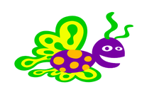
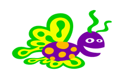

Очитавање позиције миша¶
У ПајГејму постоји једноставан начин да сазнамо, то јест очитамо тренутно стање миша. Подаци који нас често највише интересују су позиција миша и притиснути тастери. У овој лекцији ћемо користиити очитавње позиције миша, а у следећој тастере миша. Осим позиције и притиснутих тастера, постоје и друге информације о мишу које можемо да добијемо, али то овде нећемо радити. Заинтересовани могу да нађу више детаља на пример овде .
Позицију миша можемо добити позивом функције pg.mouse.get_pos(), која враћа уређени пар координата тачке на којој се тренутно налази показивач миша.
Као што ћемо видети у примерима и задацима који следе, употреба ове функције је врло једноставна, а очитану позицију миша можемо даље да користимо на различите начине.
Примери и задаци¶

Пример - лептир прати миша:
У овом примеру учитавамо две слике лептира и приказујемо их наизменично, као што смо то радили у анимацијама. Ново је то да се место на коме приказујемо лептира одређује на основу позиције миша, коју смо добили помоћу функције pg.mouse.get_pos().
 

{kind=link}
Вероватно сте приметили да када брже померате миша, лептир мало касни за њим. Ово се дешава зато што се приказује само 5 фрејмова у секунди, па кашњење може буде и до 0.2 секунде.
Ово кашњење се лако елиминише тако што повећамо учесталост приказивања (приказујемо већи број фрејмова у секунди), међутим тада се слике смењују превише често и дејује да лептир сувише брзо маше крилима. Решење је да повећамо учесталост приказивања, а да сваку слику приказујемо током више фрејмова.
Задатак - брзо кретање, споро махање: Ископирајте овде претходни програм, а затим га измените тако да лептир не касни за мишем, али да брзина махања крилима остане иста.
Помоћ: да лептир не би каснио, свакако нам треба више фрејмова у секунди, на пример n пута више. То значи да се функција nov_frejm позива n пута чешће него раније. Да би се при томе задржала иста брзина махања крилима, потребно је да се свака слика приказује n пута дуже, то јест током n узастопних фрејмова.
Задатак - према мишу: Напишите програм у коме се зелена лоптица креће ка мишу, као у примеру (дугме “Прикажи пример”).
Помоћ: У овом задатку је кључно како се мењају координате \((x, y)\) центра лоптице. У ситуацији као на слици, желимо да x повећамо за dx, а y да повећамо за dy. У зависности од тога како желимо да се лоптица креће, величине dx, dy могу да се израчунају на разне начине. Један једноставан начин је да изаберемо \(dx = {1 \over 10} (xm - x), dy = {1 \over 10} (ym - y)\).

Задатак - према мишу са трагом: Ископирајте претходни програм, а затим га преправите тако да лоптица оставља сиви траг, као у примеру (дугме “Прикажи пример”).
Помоћ: Кретање лоптице је исто као у претходном примеру. Да бисмо направили траг, потребно је памтити листу неколико (ми смо користили 20) претходних положаја лоптице.
При израчунавању новог стања, на листу додајемо најновији положај, а ако је листа постала предуга, избацујемо најстарији положај.
При цртању трага, за сваки круг користимо боју (nijansa, nijansa, nijansa), где је нијанса пре петље једнака 255 (бела), а у петљи се смањује за одређену вредност, тако да у последњем пролазу кроз петљу постане нула, или што ближе нули (црна).
Дакле, ако се листа на пример зове trag, у вашем програму треба да се појаве овакве или сличне наредбе:
trag = []
...
def nov_frejm():
...
trag.append((x, y))
...
if ...
trag = trag[1:]
На крају, можете да испробате следећа два програма и да се поиграте са њима.
Да би се направили овакви програми, поред овде приказаних техника програмирања потребно је и мало знања физике (еластична сила, други Њутнов закон) и математике (Питагорина теорема). Погледајте програме, без обавезе да их потпуно разумете. Ако желите, пробајте да мало измените неке константе, па видите како то утиче на рад програма.
Пример: Јо-јо
Пример: Очи
Овај програм такође захтева мало више знања математике, па се нећемо упуштати у детаље. Ако вас интересује како овај програм ради, а математика вам добро иде, покушајте да разумете детаље уз нечију помоћ.